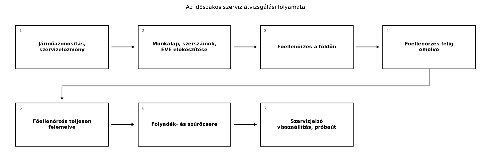

35.3 Karbantartási ütemterv és a
jármű átvizsgálása
35.3.1 Motiváció
Egy 2018-as, 98 000 km-t futott benzines autó megrendelője azt kéri:
„csak olajcserét kérek, ne akarjanak rám extra munkát sózni.” A
szerviztanácsadó kiolvassa a szervizkönyvet, és látja, hogy ugyanakkor
esedékes a fékfolyadék-csere és az utastérszűrő is, a gyártó előírása
szerint. A jármű műhelybe áll, a szerelő átvizsgálja. A karbantartó az
ütemterv alapján dolgozik, nem csak a panaszra reagál: így derül ki,
hogy a hátsó fékbetét vastagsága a kopási határ közelében van, és a
szervizjelző visszaállítása is a feladat része. Ebből a helyzetből
tanuljuk meg, miért kell ismerni a karbantartási
ütemtervet és a főellenőrzés sorrendjét.
35.3.2 Szemléletes kép
Képzeljünk el egy időszakos szerviz átvizsgálási folyamatát, ahogy a
jármű a földön, félig, majd teljesen felemelt állapotban vizsgáljuk.

Az időszakos szerviz átvizsgálási
folyamata - A folyamat tanulási séma; a gyártói javítási utasítás a
mérvadó.
A folyamat balról jobbra halad: először azonosítjuk a járművet és a
szervizelőzményt, aztán előkészítjük a munkalapot és a szerszámokat.
Ezután három magassági lépcsőben végezzük el a főellenőrzést, végül a
cseréket, a visszaállítást és a próbautat.
35.3.3 Definíciók és
alapfogalmak
Definíció. A karbantartási ütemterv
(maintenance schedule; „szervizintervallum”) a gyártó által
meghatározott, időszakonként vagy futásteljesítmény szerint ismétlődő
ellenőrzési, beállítási és cserefeladatok rendszere. A gyártói ütemterv
tartalmazza, melyik tételt mikor, milyen feltételek mellett kell
elvégezni.
Definíció. A főellenőrzés a jármű
szisztematikus átvizsgálása: a földön, félig felemelve és teljesen
felemelve végzett ellenőrzési sorozat, amely a forgalombiztonsági,
környezetvédelmi és állapotfüggő tételeket foglalja magában.
Szabály. A gyártói karbantartási tervben megadott
értékek és intervallumok kötelező iránymutatások a
szerviz számára. Ha az ügyfél kérése vagy a műhely gyakorlata ettől
eltér, a gyártói adat az elsődleges, és az eltérést dokumentálni kell,
mert a jótállási és szavatossági igényeknél ez mérvadó
(ellenőrizendő: a gyártó karbantartási előírása).
Megjegyzés. A karbantartási ütemtervben két fő séma
van: idő- vagy futásteljesítmény-alapú (pl. minden 12
hónapban vagy 15 000 km-kor, amelyik előbb bekövetkezik) és
rugalmas szerviz (flexible service; a jármű terhelése,
az olajminőség, a hidegindítások száma alapján a fedélzeti számítás
jelzi a hátralévő kilométert). A rugalmas szerviz indikátor a modern
motoroknál az olajminőség-érzékelőre és a vezérlő számítására épül; a
pontos értékeket a gyártói adatbázis adja meg (ellenőrizendő:
gyártói adat).
35.3.4 Felépítés és működés
35.3.4.1 A gyártói karbantartási
ütemterv
A szervizkönyvben vagy gyártói adatbázisban szereplő ütemterv
jellemzően a következő csoportokat tartalmazza:
Kis szerviz (olajcsere-szerviz): motorolaj és
olajszűrő cseréje, alapellenőrzések, folyadékszintek, lámpák,
gumiabroncsnyomás, szervizjelző visszaállítása.
Nagy szerviz (főszerviz): a kiszerviz elemei
mellett légszűrő, utastéri szűrő, gyújtógyertyák (Otto-motor),
üzemanyagszűrő (dízel), fékfolyadék, hűtőfolyadék, vezérműszíj/lánc
ellenőrzése, fékbetétek, futómű-kopás vizsgálata, a diagnosztikai
hibakód-memória leolvasása.
Kopási és korfüggő tételek: vezérműszíj-készlet
(jellemzően 5–8 év vagy 60 000–160 000 km), láncvezérlés (ha nem
élettartam-kenésű, kopásvizsgálat), kiegészítő hajtószíj, vízpumpa,
hűtőfolyadék és fékfolyadék cseréje. Ezek az értékek típusonként nagyon
eltérők, ezért mindig a gyártói táblázatot kell használni
(ellenőrizendő: adott jármű gyártói adata).
A következő táblázat egy szemléltető karbantartási
terv, nem konkrét típusra vonatkozik.
Karbantartási tétel
Időintervallum (példa)
Futásteljesítmény (példa)
Motorolaj és olajszűrő
1 év, vagy rugalmas jelzés
15 000–30 000 km
Utastéri szűrő
2 év
30 000 km
Légszűrő
2 év
30 000 km
Fékfolyadék
2 év
–
Gyújtógyertyák (Otto)
4 év
60 000 km
Vezérműszíj-készlet
5–8 év
90 000–160 000 km
Az értékek tanulási példák (ellenőrizendő: gyártói adat).
Előírás. A jármű karbantartását a gyártó által
előírt intervallumok szerint kell elvégezni. A magyarországi forgalomba
helyezés és forgalomban tartás műszaki feltételeiről szóló 6/1990. (IV.
12.) KÖHÉM rendelet a jármű műszaki állapotának fenntartását írja elő; a
gyártói karbantartás elmaradása nem feltétlenül jogsértés, de baleset
vagy hiba esetén a szavatossági igényt befolyásolja
(ellenőrizendő: hatályos rendelet, jótállási
feltételek).
35.3.4.2 A jármű főellenőrzése
A főellenőrzés lényege a rendszeres és nyomon követhető
átvizsgálás. A munkát három emelési szintre bontjuk:
Jármű a földön (motor leállítva, kézifék behúzva):
dokumentumok ellenőrzése, futásteljesítmény rögzítése,
szervizjelző/kopásjelző kiolvasása, műszerfali lámpák, külső világítás,
abroncsok mintázata és nyomása, ajtók, zárak, elektromos ablakok,
tükrök, ülések, biztonsági övek, klíma működésének gyors próbája.
Jármű félig felemelve (emelőoszlopokon, a kerék még
a talajon vagy éppen tehermentesítve): kerékcsapágyak játéka,
kerékfelfüggesztések, lengéscsillapítók, gömbcsuklók, kormányrudazat,
fékcsövek és -tömlők szemrevételezése, fékbetét- és tárcsavastagság
előzetes mérése, a hajtómű/futómű olajfolyások.
Jármű teljesen felemelve: minden alul lévő elem
tüzetes vizsgálata: fékrendszer, üzemanyag- és fékcsövek,
kipufogórendszer, motortér alulnézet, erőátvitel, kormányösszekötők,
féltengelycsuklók, leeresztőcsavarok, motor- és váltóolaj leeresztése,
szűrők cseréje.
A gyakorlati útmutatóban ezt a sorrendet dolgozzuk ki.
Statikus változat (mint a PDF-ben)
A jármű főellenőrzése három helyzetben: a földön, félig
felemelve és teljesen felemelve
Az ábra számozott pontjai a három helyzet ellenőrzési helyeit
mutatják. Félig felemelve a kerekek tehermentesítve vannak: a kereket 12
és 6 óránál megfogva a csapágy- és gömbcsuklójátékot, 3 és 9 óránál a
kormányösszekötő játékát vizsgáljuk; teljesen felemelve lámpával,
alulról nézzük át a csöveket, a kipufogót és a futómű gumielemeit. Az
emelőkar tappancsai mindhárom helyzetben a gyártói emelési pontokon
vannak.
35.3.5 Kidolgozott példák
1. példa (A szint). Egy jármű karbantartási
ütemterve szerint az olajcsere-intervallum 12 hónap vagy 15 000
km, amelyik előbb bekövetkezik. Az autó futásteljesítménye
jelenleg 57 850 km, az utolsó olajcserét 55 000 km-nél végezték, 5
hónappal ezelőtt. Mikor esedékes a következő olajcsere?
Adott: aktuális futás:
;
utolsó olajcsere:
;
intervallum:
;
idő:
hónap; eltelt:
hónap.
Keresett: a következő olajcsere időpontja hónapban
és km-ben.
Megoldás: a km szerinti hátralévő:
.
Idő szerint hátralévő:
hónap. Az eddigi átlag
;
ezzel a
km kb.
hónap alatt fogyna el, ami több a hátralévő
hónapnál, ezért az idő a mérvadó: a következő olajcserét 7 hónap
múlva kell elvégezni (vagy
km-nél, ha az előbb következik be). A pontos ütemezést a műhely
számítógépe követi a gyártói adatbázisnak megfelelően.
Ellenőrzés: az intervallum logikája: az előbbi
esemény a mérvadó. ∎
2. példa (B szint). A B-oszlopon lévő
gumiabroncsnyomás-matrica szerint az első kerekek előírt nyomása
,
a hátsóké
.
A mérőműszer az első kerekeken
értéket mutat. Hány százalékkal alacsonyabb a mért nyomás az előírtnál?
A gumiabroncs hőmérséklete
,
a jármű hideg.
Adott:
;
.
Keresett: az eltérés százalékban.
Képlet:
.
Behelyettesítés:
.
Ellenőrzés: a
különbség a
bar közel
-a.
Ilyen eltérés befolyásolja a fogyasztást, a gumiabroncs kopását és a
menetstabilitást, ezért a nyomást be kell állítani az előírt értékre.
∎
Hibás példa. A szerelő a leeresztőcsavar helyett a
váltó leeresztőcsavarját nyitja meg, mert nem követi a gyártói
dokumentációt. A kézi váltó olaját ereszti le, a motorolajat nem
cseréli, majd a motorba túltölti az olajat. Ez a hiba a szervizjelző
visszaállítása után is rejtve marad, és károsíthatja a motort. Ezért a
leeresztő- és feltöltőhelyeket mindig a járműspecifikus adatból kell
azonosítani (ellenőrizendő: gyártói javítási adat).
35.3.6 Minőségellenőrzés
A főellenőrzés során a következő értékeket és állapotokat kell mérni
vagy megfigyelni, mindig a gyártói előíráshoz vagy a hatósági kopási
határhoz viszonyítva:
Gumiabroncsnyomás: digitális nyomásmérővel, hideg
abroncson, a B-oszlop matricája vagy a gyártói adat szerint; tipikus
személyautó-értékek
–
között (ellenőrizendő: adott jármű adata).
Fékbetét-vastagság: tolómérővel, a gyártói
minimális vastagság (pl.
betét + hátlemez) (ellenőrizendő: gyártói kopási
határ); a hatósági vizsgálaton a beépíthető legkisebb vastagság
szabályozott.
Féktárcsa vastagság: mikrométerrel, a tárcsán
jelzett minimális vastagság (pl.
)
(ellenőrizendő: gyártói adat).
Akkumulátor: indítási feszültség mérése, töltési
feszültség, nyugalmi áram; a hidegindító áram szerint
(ellenőrizendő: EN 50342-1, járműspecifikus adat).
Fagyáspont: hűtőfolyadék refraktométerrel; a
szükséges védettség legalább
vagy a gyártó szerint (ellenőrizendő: gyártói
ajánlás).
Fékfolyadék: nedvességtartalom-mérővel
(forráspont),
éves ciklus, a DOT-jelölés mellett (DOT itt minőségi osztály)
(ellenőrizendő: gyártói előírás).
Vezérműszíj/lánc állapota: repedés, kopás, zaj; a
cseréintervallum a gyártói táblázatból
(ellenőrizendő).
TPMS: a keréknyomás-ellenőrző rendszer kijelzőjének
leolvasása, a szenzorok állapota; a tanítási gyakorlatban a gyártói
diagnosztika szerinti tanulási mód
(ellenőrizendő).
35.3.7 Valós életbeli
alkalmazás
Valós eset. Egy 2015-ös, 120 000 km-t futott dízel
autó tulajdonosa szervizjelző-jelzéssel érkezik. A szerviztanácsadó
kiolvassa a szervizkönyvet, és látja, hogy a gyártói ütemterv szerint
120 000 km-nél nagy szerviz esedékes: motorolaj, olajszűrő, légszűrő,
utastérszűrő, üzemanyagszűrő, fékfolyadék, valamint a vezérműszíj
ellenőrzése. A műhely a főellenőrzést követi: a jármű földön, félig,
majd teljesen felemelve. A futóművizsgálat során a hátsó
lengéscsillapító olajfolyását találják, a fékbetétek kopási határ alatt
vannak, és a klíma hűtőközegnyomása alacsony. A hibákat a gyártói
előírás szerint javítják, a szervizjelzőt visszaállítják, és a
munkalapon dokumentálják. A próbaút és az EOBD-readiness ellenőrzés után
a jármű távozhat. A tanulság: a szervizjelző nem csak olajcserét
jelent, hanem a gyártói ciklus összes tételét; az átvizsgálás
minden lépése megelőzi a későbbi, drágább meghibásodást.
35.3.8 Gyakorlati útmutató
Biztonsági korlát. A feladat tanműhelyi környezetre,
oktató felügyeletére és a gyártói javítási utasítás betartására
vonatkozik; a megadott értékek tanulási példák.
HV-biztonság. Hibrid vagy elektromos jármű esetén a
karbantartási munkák előtt a nagyfeszültségű (HV) rendszer
feszültségmentesítését a gyártói eljárás szerint kell elvégezni; erre
képzett, jogosult személy végezheti. A hagyományos belső égésű járművön
e fejezetben a 12 V-os rendszeren dolgozunk, de a HV-rendszerű
járműveknél a Nagyfeszültségű rendszerek
biztonsága fejezetet kell alkalmazni.
35.3.8.1 Cél
Az időszakos szerviz átvizsgálásának elvégzése, a szükséges csere- és
ellenőrző műveletek végrehajtása, a szervizjelző visszaállítása.
35.3.8.2 Jármű- és
adatazonosítás
Járműazonosító szám (VIN) leolvasása, kilométeróra-állás
rögzítése.
Gyártói karbantartási ütemterv és javítási adatbázis lekérdezése
(típus, motor, felszereltség).
Munkalap előkészítése, az ügyfél nyilatkozata a panaszokról.
35.3.8.3 Szükséges szerszámok,
mérőeszközök, anyagok
Emelő (oszlopos emelő vagy bakok), nyomatékkulcs, kerékékek
(kerékblokkoló ékek), olajszűrő-kulcs, olajgyűjtő edény, gyűjtőedények,
digitális nyomásmérő, tolómérő, mikrométer, multiméter,
akkumulátor-tesztelő, refraktométer, fékfolyadék-tesztelő, diagnosztikai
rendszerteszter, gyártói diagnosztika (szervizjelző visszaállításához),
gyártó által előírt motorolaj, szűrők, fékfolyadék, tömítések, új
leeresztőcsavar és tömítőgyűrű (ha a gyártó előírja).
35.3.8.4 Munkavédelmi és
környezetvédelmi lépések
Figyelem. Jármű alatt csak a gyártói emelési
pontokon felemelt és mechanikusan reteszelt műhelyi járműemelőn vagy
megfelelő teherbírású bakokon szabad dolgozni. Csak kocsiemelővel
tartott jármű alá bemenni tilos.
Környezetvédelem. A fáradt olajat, fékfolyadékot,
hűtőfolyadékot és a szűrőket szelektíven, veszélyes hulladékként kell
gyűjteni (a hulladékokról szóló törvény és a veszélyes hulladék
kezelésére vonatkozó rendeletek szerint) (ellenőrizendő:
hatályos jogszabályok).
Figyelem. A klíma hűtőközegét (F-gázt) a légkörbe
engedni tilos; a kezeléséhez képesítés szükséges
(ellenőrizendő: hatályos uniós és hazai F-gáz
szabályozás).
A kipufogógáz-elszívást zárt térben járó motornál biztosítani
kell.
35.3.8.5 Számozott
munkalépések
Jármű a földön
Ellenőrizzük a VIN-t, a futásteljesítményt, a
szervizelőzményeket.
Rögzítjük a hibakód-memóriát (OBD/EOBD) a rendszerteszterrel; a
meglévő hibakódokat nem töröljük a hiba elhárítása nélkül.
Kapcsoljuk le a gyújtást, kézifék be, sebességváltó P/N
állásban.
Mérjük meg a gumiabroncsnyomást hidegen; állítsuk be a gyártói
értékre; a TPMS-t a gyártói eljárás szerint tanítsuk, ha szükséges.
Végezzük el a folyadékszint-ellenőrzéseket: motorolaj (pálca),
hűtőfolyadék, fékfolyadék, szervofolyadék (ha van), a klíma működésének
próbája (a kiáramló levegő hőmérséklete); a hűtőközeg töltetét csak
képesített szerelő ellenőrizheti hűtőközeg-szervizgéppel.
Indítsuk be a motort, ellenőrizzük a műszerfali figyelmeztetőket, a
klímát, a világítást, az ablaktörlőt, az ablakemelőket.
Jármű félig felemelve
Emeljük a járművet a gyártói emelési pontokon (reteszelt műhelyi
emelővel) úgy, hogy a kerekek éppen elemelkedjenek a talajtól (kb. 5–10
cm), így szabadon foroghatnak és mozgathatók, és hozzáférünk a
kerékjáratokhoz, a kormány- és felfüggesztési elemekhez. Ebben a
magasságban a jármű alá nem megyünk be; a gömbcsukló- és
lengőkar-holtjáték terhelt állapotú vizsgálatát külön, a gyártói eljárás
szerint végezzük.
Vizsgáljuk a kerékcsapágy játékát: markoljuk meg a kereket 12 és 6
óránál, mozgassuk; a játék a gyártói határértéken belül legyen.
Ellenőrizzük a kormányösszekötőt, a stabilizátor-rudat, a
gömbcsuklókat, a lengéscsillapító tokokat, a féktömlők állapotát.
Mérjük meg a fékbetét-vastagságot a féknyereg ablakán keresztül,
tolómérővel; a határérték alatt cserét tervezünk.
Szemrevételezés a tárcsán, dobokon, fékcsöveken.
Jármű teljesen felemelve
Emeljük a járművet teljes magasságba, biztosítsuk az
alátámasztást.
Végezzük el a leeresztési műveleteket: motorolaj, váltóolaj,
hűtőfolyadék (a gyártói periódus szerint). A leeresztőcsavarokat
nyomatékkulccsal, a gyártói nyomatékkal húzzuk meg
(ellenőrizendő: gyártói adat).
Cseréljük az olajszűrőt, a légszűrőt, az utastéri szűrőt, az
üzemanyagszűrőt (ha a tervben szerepel).
Vizsgáljuk a vezérműszíj vagy lánc állapotát, a szíjfeszítőt, a
segédberendezések hajtószíját. A vezérműszíj cseréjét a gyártói
intervallumnak megfelelően ütemezzük (ellenőrizendő: gyártói
periódus).
Ellenőrizzük a hűtőrendszer tömítettségét, a gyári töltetnyomást, a
termosztát nyitását ha szükséges.
Töltsük fel a motorolajat a gyártói töltetmennyiség és viszkozitás
szerint (pl.
,
-30).
A pontos mennyiséget a nívópálcával ellenőrizzük (ellenőrizendő:
gyártói adat).
Utolsó tételek és szervizjelző visszaállítása
Végezzük el a fékfolyadék-cserét a gyártói eljárás szerint,
légtelenítéssel; a használt folyadékot gyűjtsük.
Ellenőrizzük az akkumulátort: feszültség, hidegindító áram, töltési
feszültség. Ha csere szükséges, a gyártói folyamat szerint cseréljük, és
regisztráljuk az új akkumulátort a fedélzeti hálózatban (az
akkumulátor-regisztrációt igénylő típusoknál).
Töröljük a szervizjelzőt a gyártói diagnosztikával vagy a gyártó
által előírt kézi kombinációval (ellenőrizendő: típusspecifikus
eljárás).
Csatlakoztassuk a rendszertesztert; csak a már elhárított hibák
kódját töröljük (elhárítatlan hibakódot nem törlünk). A törlés a
readiness-monitorokat nullázza, ezért a próbaút (gyártói vezetési
ciklus) után ellenőrizzük, hogy az EOBD-readiness monitorok újra „kész”
állapotúak-e, és műszaki vizsga előtt erről tájékoztassuk az
ügyfelet.
Végezzünk próbautat, majd ellenőrizzük a folyadékszinteket és a
tömítettséget.
Töltsük ki a munkalapot, a szervizkönyvet, és rögzítsük a következő
esedékességet.
35.3.8.6 Dokumentálás
A munkalapon szerepeljen: VIN, futásteljesítmény, elvégzett tételek,
felhasznált anyagok és mennyiségek, meghúzási nyomatékok, mért értékek
(fékbetét, nyomás, akkumulátor), a szervizjelző visszaállításának ténye,
a következő esedékes szerviz időpontja (km és hónap), az észlelt
rendellenességek és a javasolt további munkák.
35.3.9 Receptek és eljárások
35.3.9.1 Akkumulátor le- és
felkötése
Eljárás. A 12 V-os akkumulátor lekötése és felkötése
a gyártói sorrend betartásával:
Győződjünk meg arról, hogy a gyújtás ki van kapcsolva, és a gyártó
által előírt adatmentési, ablakemelő- és kormányszög-tanítási vagy egyéb
eljárásokat elvégeztük, ha szükséges.
Vegyük le a negatív (test) saru csatlakozóját szigetelt kulccsal, és
tegyük félre úgy, hogy ne érjen a kapocshoz.
Vegyük le a pozitív saru csatlakozóját.
Az eltávolítás után végezzük el a szükséges munkát.
Felkötéskor először a pozitív sarut csatlakoztatjuk, majd a
negatívat.
Ellenőrizzük a kapcsok feszességét, a fedélzeti rendszerek
működését, majd a gyártói előírás szerinti tanításokat (pl. ablakemelő,
kormányszögszenzor, TPMS, elektromos rögzítőfék).
Statikus változat (mint a PDF-ben)
Akkumulátor le- és felkötése: a saruk sorrendje, helyes és
hibás eset
A hibás képen a szaggatott vonal a zárlati áram útja: pozitív pólus →
kulcs → karosszéria → testkábel → negatív pólus. Ha a negatív sarut
oldjuk először, a kulcs a testhez érve sem okoz zárlatot, mert a negatív
pólus és a karosszéria azonos potenciálon van.
Figyelem. A sorrend felcserélése esetén a testen
keresztül zárlat keletkezhet, ami szikrát, sérülést vagy elektronikai
károsodást okozhat. Töltéskor az akkumulátor durranógázt (hidrogént)
fejleszt; nyílt lángtól, szikrától távol kell tartani.
35.3.9.2 Szervizjelző
visszaállítása
Eljárás. A szervizjelző visszaállítása típusfüggő,
de általános lépések:
Olvassuk ki a gyártói adatbázisból a pontos módszert (diagnosztikai
műszer menüpont, fedélzeti kombináció, vagy mobilalkalmazás).
Kapcsoljuk be a gyújtást (motor nem jár).
Lépjünk be a diagnosztikai rendszerbe, válasszuk ki a
„szerviz/karbantartás” menüt.
Válasszuk ki a megfelelő szervizintervallumot (ha a jármű többféle
intervallumot támogat).
Végezzük el a visszaállítást, és erősítsük meg.
Kapcsoljuk ki a gyújtást, majd várjunk a gyártói idő szerint (pl.
s), és kapcsoljuk vissza, hogy ellenőrizzük a visszaállítást.
Ha az érték nem törlődik, ismételjük meg, vagy használjunk gyártói
diagnosztikát.
Hiba. A visszaállítás elmulasztása után a
műszerfalon továbbra is világít a szervizjelző, és az ügyfél reklamálni
fog. A hibás intervallum kiválasztása (pl. az olajcsere-szerviz helyett
a nagy szervizét) téves ütemezéshez vezet.
35.3.10 Tipikus hibák
Hibás emelési pont használata. A szerelő a küszöböt
vagy a padlólemezt emeli, ami deformációt okoz. Helyes
gyakorlat: mindig a gyártói emelési pontokon, emelőtalppal
ellátott oszlopos emelőt használunk, és ha szükséges, bakokkal
alátámasztunk.
Az akkumulátor le- és felkötési sorrendjének
felcserélése. A negatív sarut kell először levenni és utoljára
feltenni. A rossz sorrend ívhegesztő hatást okozhat a test és a szerszám
között.
A leeresztő- és feltöltőhelyek összekeverése. A
motorolaj és a váltóolaj csavarja könnyen összetéveszthető; a rossz
nyílás megbontása maradandó kárt okoz. A gyártói adatot mindig
azonosítani kell.
A szervizjelző visszaállításának elmaradása. A
mechanikai munka elvégzése után a szervizjelzőt is törölni kell,
különben az ügyfél nem tudja, mikor következik a következő
karbantartás.
A fékfolyadék- vagy hűtőfolyadék-csere
elhanyagolása. A periódus lejárt, de a fékfolyadék
nedvességtartalma nő, a hűtőfolyadék korróziógátlója lebomlik; ezeket a
gyártói periódus szerint cserélni kell.
35.3.11 Önellenőrzés
Igaz vagy hamis? Az akkumulátor lekötésekor először a pozitív sarut
kell levenni. Indokold röviden.
Számítás: Egy autó szervizintervalluma 15 000 km vagy 12 hónap. Az
utolsó szerviz 60 000 km-nél volt, 6 hónappal ezelőtt. Jelenleg 68 000
km. Mennyi van hátra km-ben és hónapban, és melyik következik
előbb?
Mi a különbség a hagyományos (fix) és a rugalmas szervizintervallum
között? Melyik járműelem jelzi a rugalmas szerviz hátralévő
értékét?
Sorold fel a főellenőrzés három emelési szintjét, és adj
mindegyikhez egy jellemző ellenőrzést.
Mi a hiba az alábbi leírásban? „A szerelő a műszerfalon kigyulladt
szervizjelző láttán csak az olajat és az olajszűrőt cseréli, majd a
gyújtást ki-be kapcsolja; a jelzés eltűnik, ezért biztos a sikeres
karbantartás.”
Miért kell az új akkumulátort a fedélzeti hálózatban regisztrálni
bizonyos típusoknál? (Röviden.)
35.3.12 Feladatok
1. feladat (A). Írd le a karbantartási ütemterv
fogalmát, és sorold fel a kis szerviz legjellemzőbb tételeit (legalább
négyet).
2. feladat (B). Egy jármű gyártói előírása szerint a
vezérműszíj cseréje 6 év vagy 90 000 km, amelyik előbb bekövetkezik. Az
autó most 5,5 éves és 88 000 km-t futott. Mikor esedékes a csere, és
miért?
3. feladat (C). Műhelyi munkalapot készítesz. A
járművön a jobb első fékbetét vastagsága 4,5 mm, a gyártói minimális
érték 3,0 mm. Az első tárcsa vastagsága 23,1 mm, a tárcsán jelzett
minimális vastagság 21,0 mm. Fékfolyadék nedvességtartalma 3%. A gyártói
karbantartási terv szerint a fékfolyadék 2 évente cserélendő, az utolsó
csere 3 éve volt. Melyik tételeket kell javítani vagy cserélni a
jelenlegi szervizben? Indokold.
4. feladat (B). Állítsd helyes sorrendbe a következő
munkalépéseket, és indokold a sorrendet: (a) hűtőfolyadék-csere; (b)
jármű azonosítás; (c) akkumulátor lekötése; (d) gumiabroncsnyomás
ellenőrzése; (e) motorolaj leeresztése; (f) szervizjelző visszaállítása;
(g) hibakód-olvasás.
5. feladat (D). Egy műhelyfőnök panaszkodik: az
egyik szerelő a jármű átvizsgálása során elfelejtette felhúzni a
kéziféket, majd a kocsit emelőre tette. A jármű félig felemelt
állapotban elmozdult. Mely munkabiztonsági szabályt sértették meg, és
hogyan előzhető meg? Fogalmazd meg a „Biztonsági korlát” elvét is.
35.3.13 Megoldások
Önellenőrzés – válaszok
Hamis. Először a negatív (test) sarut kell levenni, hogy ne
keletkezhessen zárlat a szerszám és a test között. A felkötésnél
fordítva: először a pozitív, utána a negatív.
Km szerint hátralévő:
km. Idő szerint:
hónap. Az eddigi átlag
,
így a hátralévő
km kb.
hónap alatt fogy el: a
km-es határ várhatóan előbb jön el, a szerviz kb. 5 hónap múlva (75 000
km-nél) esedékes; ha a használat lassul, legkésőbb 6 hónap múlva. A
pontos számítást a gyártói adatbázis végzi.
A fix intervallum rögzített km/idő, a rugalmas a használati
körülmények alapján számolja a hátralévő élettartamot. A rugalmas
szervizhez olajminőség-érzékelő és fedélzeti számítás szükséges.
Földön: külső világítás, abroncsnyomás; félig emelve: kerékcsapágy,
fékbetét; teljesen felemelve: fékcsövek, kipufogó, leeresztések.
A hiba: a szervizjelző törlése nem a karbantartás elvégzését
igazolja, és ha a jelzés magától eltűnik, az nem biztosítja a tételek
elvégzését. A gyártói tételeket kell végrehajtani, majd a szervizjelzőt
a gyártói eljárás szerint visszaállítani, és a szervizkönyvbe
bejegyezni.
Az akkumulátor-regisztráció azért szükséges, mert az
energiagazdálkodás a töltési stratégia és a start-stop funkció
optimalizálásához tudnia kell az akkumulátor korát, kapacitását; enélkül
a rendszer nem tölt megfelelően, és az akkumulátor idő előtt tönkremegy.
A pontos eljárást a gyártói diagnosztika adja meg.
Feladatok – megoldások
1. feladat (A). A karbantartási ütemterv a gyártó
által meghatározott, időszakonként vagy futásteljesítmény szerint
ismétlődő ellenőrzési, beállítási és cserefeladatok rendszere. Jellemző
kis szerviz tételek: motorolaj csere, olajszűrő csere,
folyadékszint-ellenőrzések, gumiabroncsnyomás beállítás,
világítás-ellenőrzés, szervizjelző visszaállítása.
2. feladat (B). Az autó 5,5 év, és 88 000 km. Az idő
szerinti határ 6 év, tehát még 0,5 év hátra. A km szerinti határ 90 000
km, tehát 2 000 km van hátra. Mivel 2 000 km várhatóan hamarabb telik
el, mint fél év, a csere a 90 000 km elérésekor esedékes, vagy legkésőbb
6 éves korban, amelyik előbb bekövetkezik.
3. feladat (C). A fékbetét 4,5 mm vastag, a minimum
3,0 mm, tehát még nem éri el a kopási határt, de a fékrendszer
átvizsgálása javasolt. A féktárcsa 23,1 mm, a minimum 21,0 mm, tehát a
tárcsa még jó. A fékfolyadék nedvességtartalma 3%, a gyakorlatban 3%
felett cserét jelez (a pontos határértéket a gyártói adat adja meg); az
utolsó csere 3 éve volt, a gyártói periódus 2 év, ezért a fékfolyadékot
cserélni kell a jelen szervizben. A fékbetétet csak akkor cseréljük, ha
a vastagsága a minimális értékhez közelít vagy egyenetlen kopást
mutat.
4. feladat (B). Helyes sorrend: (b) jármű
azonosítás, (g) hibakód-olvasás, (d) gumiabroncsnyomás ellenőrzése, (e)
motorolaj leeresztése, (a) hűtőfolyadék-csere, (f) szervizjelző
visszaállítása; a (c) akkumulátor-lekötés opcionális, csak a gyártói
előírás szerint, a villamos beavatkozás előtt. Az azonosítás és a
hibakód-olvasás a munka elején történik, hogy ismerjük a jármű
állapotát. Az akkumulátor lekötése olaj- és hűtőfolyadék-cseréhez nem
szükséges, sőt a modern járműnél adaptációvesztést és újratanítási
igényt okozhat, a szervizjelző visszaállításához és a hűtőrendszer
légtelenítéséhez pedig áram kell; ezért a (c) lépés csak akkor kerül be,
ha a munka (például villamos alkatrész cseréje) a gyártó szerint
megköveteli. A nyomásellenőrzés a földön végezhető. A szervizjelző
visszaállítása a munka végén, a próbaút és a szintek ellenőrzése
után.
5. feladat (D). Megsértették a jármű biztonságos
rögzítésének kötelezettségét. A járművet emelés előtt kézifékkel és
sebességváltóval (P vagy 1. fokozat) ki kell biztosítani; a kerekeket
ékekkel is meg kell támasztani. A félig felemelt állapotban a jármű
mozgásveszélyes, ezért mindig az emelési pontokon, alátámasztással kell
dolgozni. A Biztonsági korlát szerint: „A feladat
tanműhelyi környezetre, oktató felügyeletére és a gyártói javítási
utasítás betartására vonatkozik; a megadott értékek tanulási
példák.”
35.3.14 Rövid összefoglaló
A karbantartási ütemterv a gyártó által meghatározott, idő- vagy
futásteljesítmény-alapú, esetleg rugalmas szervizintervallumok
rendszere. A főellenőrzés három emelési szintje – földön, félig,
teljesen felemelve – biztosítja, hogy a jármű forgalombiztonsági,
környezetvédelmi és állapotfüggő tételeit szisztematikusan ellenőrizzük.
A szerviz során a gyártói adat az elsődleges: a leeresztő- és
feltöltőhelyek, meghúzási nyomatékok, folyadékmennyiségek,
vezérműszíj-csere periódusok és a szervizjelző visszaállítási mód mind a
típusra érvényes adatból származnak. Az akkumulátor lekötésekor a
negatív sarut vesszük le először, felkötéskor a pozitívat tesszük fel
először; egyes típusoknál az új akkumulátort regisztrálni kell. A munkát
mindig dokumentáljuk, és a szervizjelzőt csak a ténylegesen elvégzett
karbantartás után állítjuk vissza. Továbbvitt eredmény.
Az időszakos szerviz ellenőrzőlista szerkezetét és a dokumentációs
fegyelmet később az Ügyfélkapcsolat, munkalap,
árajánlat, fogyasztóvédelem és jótállás a szervizben alfejezet
használja fel a szervizteljesítmény és a fogyasztóvédelmi elvárások
bemutatására.
35.3.15 Források és ellenőrzési
hiányok
Gyártói karbantartási ütemtervek és javítási adatok (ellenőrizendő:
adott jármű típusra vonatkozó gyártói táblázat, meghúzási nyomatékok,
intervallumok).
6/1990. (IV. 12.) KÖHÉM rendelet a forgalomba helyezés és
forgalomban tartás műszaki feltételeiről (ellenőrizendő: hatályos
módosítások).
Hulladékgazdálkodási jogszabályok (a hulladékokról szóló törvény és
a veszélyes hulladék kezelésére vonatkozó rendeletek) (ellenőrizendő:
aktuális jogszabályszám).
F-gáz szabályozás (uniós és hazai) (ellenőrizendő: hatályos
előírás).
EN 50342-1 szabvány az indítóakkumulátorokra (ellenőrizendő:
aktuális kiadás).
A szervizjelző visszaállítására és az akkumulátor-regisztrációra
vonatkozó gyártói diagnosztikai eljárások (ellenőrizendő:
típusspecifikus menet).